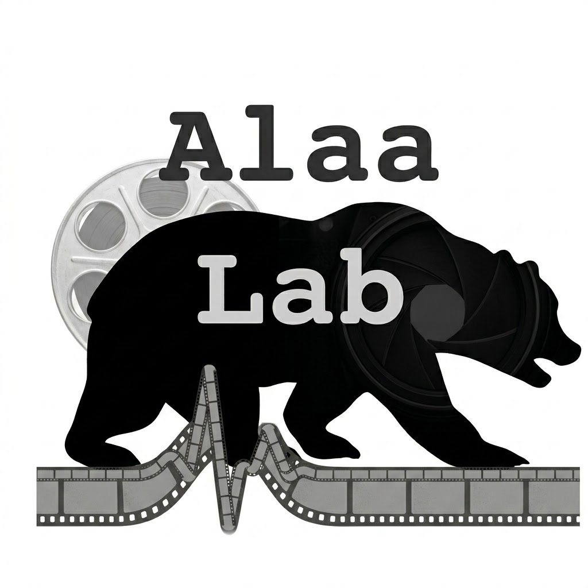

Media
Talks, seminars, and video content from the lab. Subscribe on YouTube →

Rising Stars #15: Paula Gradu (UC Berkeley) — Online Control for Adaptive Tapering of Medications

ICLR 2024 — InstructCV: Instruction-Tuned Text-to-Image Diffusion Models as Vision Generalists

Rising Stars #14 — Conformal Prediction Series: Ying Jin (Stanford)

Rising Stars #13 — Conformal Prediction Series: David Stutz (DeepMind)

Rising Stars #12 — Conformal Prediction Series: Tiffany Ding (UC Berkeley)

Rising Stars #11 — Conformal Prediction Series: Kexin Huang (Stanford University)

Rising Stars #10 — Conformal Prediction Series: Isaac Gibbs (Stanford University)

Rising Stars #9 — Conformal Prediction Series: Anastasios N. Angelopoulos (UC Berkeley)

Rising Stars #8: Clara Wong-Fannjiang (Genentech) — Prediction-Powered Inference

Rising Stars #7: Zhi Huang (Stanford) — A Vision-Language Model for Pathology using Medical Twitter

Rising Stars #6: Seyone Chithrananda (UC Berkeley) — Understanding the Combinatorial Code of Smell

Rising Stars #5: Ruishan Liu (Stanford) — ML for Clinical Trials and Precision Medicine

Rising Stars #4: Karan Singhal (Google) — LLMs for Transformative Healthcare at Scale (Med-PaLM)

Rising Stars #3: Orson Xu (UW) — Toward Next-Generation Health and Well-being

Rising Stars #2: Lavender Jiang (NYU) — NYUTron: A Health System-scale Language Model

Rising Stars #1: Sam Robertson (UC Berkeley) — Designing for Verifiability in ML Systems